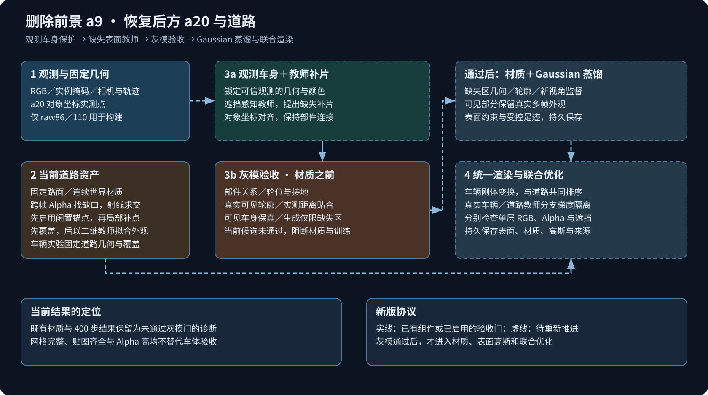

新增实验：Omni＋高质量车型参考 · 灰模验收
a20：生成式车辆表面与材质先验
2026-11-22 · 删除 a9 白色 Mazda，恢复后方黑色皮卡 a20 · 构建 raw86／110
当前 a20 先验未通过灰模验收。本轮400步归档为诊断；已前移验收并阻断后续材质／学生入口。
- 真实输入已准备；BUILD 86／110
- 两种条件纯点负例＋图像／粗框候选
- 灰模验收未通过；可见车身未保真
- 已执行诊断1次材质＋400学生更新
- 新版流程灰模先过；仅缺失区蒸馏
- 资源状态不追加实验；GPU保持开机
拟用教师：先验证灰模
| 模型 | 已核实能力 | 当前工程顺序 |
|---|
| Amodal3R | 显式可见／遮挡输入；通用对象域，代码与权重公开 | 首个遮挡灰模候选 |
| MM-TRELLIS | 图像＋测距测试时引导，使用原TRELLIS权重 | 测距约束对照 |
| RECAST | 车辆域适配及遮挡扰动训练；尚未找到可执行代码与适配权重入口 | 资源门通过后纳入 |
三者尚未在a20上运行。顺序依据当前输入与开放资源；近同向后视帧不构成侧面／正面观测。
Amodal3R raw110 CPU输入预览
新版协议：灰模验收前置

教师蒸馏协议 · 当前灰模门状态 · 本轮实际执行链路
输入与生成结果
真实训练输入：可见车身与遮挡分开

raw86／110；测距与图像来源保留，未把不可见车身当成真实观测。
纯点条件负例：扫描线栅架

点面距离较小，仍未形成合格车壳与轮位。
单张完整条件图：生成部分不是观测

原可见 RGB 硬拷贝保留，下半部为生成。二维保护没有保证三维可见车身不被替换。
本轮灰模：未通过验收

含已知尺寸配准及前向坐标修正；浮镜、凸顶、轮形失真均保留。
已执行材质诊断：不能替代灰模验收

真实 UV／基础色渲染，未重光照；有错位字样、模糊反光与不合理轮胎材质。
已完成的诊断渲染 · 灰模未通过
原始真实观测
上一轮 · 75 行交接终态
本轮 · 联合终态
固定候选的实测检查
| 检查项 | 结果 | 含义 |
|---|
| 资产总判定 | 灰模未通过；不可晋升 | 可见车身被整车先验替换，结构与材质仍有明显问题 |
| raw110 可见 RGB MAE | 上一轮 0.02017 → 本轮 0.03088 | 固定旧评分域；本轮较差 |
| raw110 局部 SSIM | 上一轮 0.9325 → 本轮 0.8755 | 本轮较差 |
| raw110 高频对应度 σ1 | 上一轮 0.6075 → 本轮 0.3687 | 纹理对应仍较差 |
| raw110 高频能量比 σ1 | 上一轮 0.4460 → 本轮 0.3448 | 相对真实可见教师；不是越大越好 |
| raw110 本轮初值 → 拟合 | MAE 0.09828 → 0.03088 | 能拟合颜色，不说明车体和先验合格 |
| raw86 其他车辆 a10 | 2948/3029 像素变化 >1/255 | 目标 RGB MAE 0.10102 → 0.14937；保护失败 |
| 最终方向灰模测距 | 精确均值 8.83 cm，p90 29.03 cm | 独立核查；未进行测距驱动几何优化 |
| 实际学生更新 | 200 车辆＋200 联合；额外 smoke 9 | 先验初始化＋可见 RGB 拟合，非完整教师蒸馏 |
| 前置灰模硬门 | 当前候选被拒绝；材质／学生入口均阻断 | 拒绝发生在 Torch／CUDA 初始化前 |
本轮判断
当前生成先验替换了整车几何，真实可见部分也被改变；模型产生的浮块、异常轮形与材质错位尚未解决。完整车壳、齐全贴图及较高 Alpha 只能说明资产可渲染。
固定旧评分域的结果显示，本轮 raw110 的颜色、局部结构和细节对应均弱于上一轮；raw86 另一辆车 a10 也有明显退化。当前结果不晋升，不据此给三维生成模型或3DGS表示能力作全局结论。
后续先建立并保护可信观测表面，只在缺失区使用通过灰模验收的教师补片。学生需增加几何、轮廓和新视角蒸馏，分别保留真实监督与生成监督；当前400步不构成这条完整闭环。
现有道路资产及上一轮七阶段实验保留。新版灰模门已在材质和学生入口前执行，当前候选实际被拒绝，未初始化CUDA。
车辆单层 RGB／Alpha 与共同遮挡后的可见贡献分别验收。形状、材质和真实观测指标不互相替代；人工质量评价留空。
完整诊断说明 · Amodal3R／RECAST核查 · MM-TRELLIS核查
方法接口：Hunyuan3D-Omni · TRELLIS.2 固定网格材质 · HUGSIM 接入依据